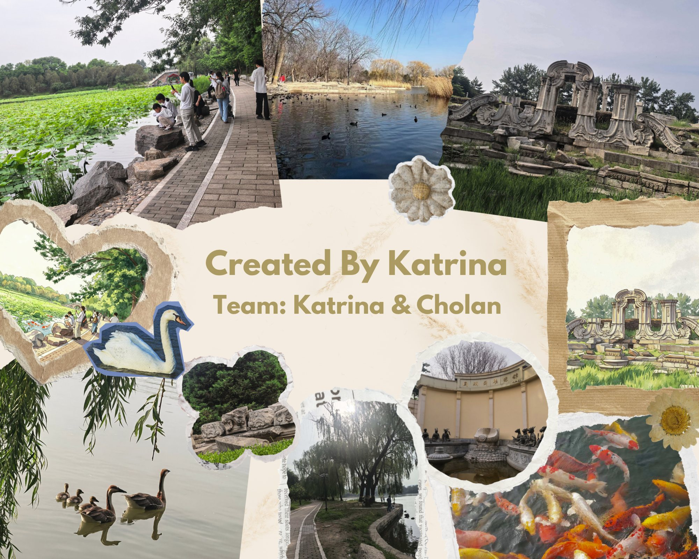

LOADING
Double Exposure
BACK TO SCENE
📓
OBSERVATION NOTES
← Back to List
CONTINUE EXPLORING
YOU HAVE SEEN
EXPLORE AGAIN
EASTER EGG

CLOSE
RETURN HOME
Double Exposure
Returning to The Old Summer Palace
BEGIN EXPLORATION
CONTINUE
Click to begin exploring Yuanmingyuan
RETURN HOME
Hotspot Editor
Drag to draw hotspot area
Hotspot Editor
📁 Load Background
Drag to draw hotspots on the background
Press E or click button to exit
📋 Export JSON to Clipboard
Clear All Hotspots